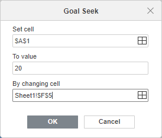
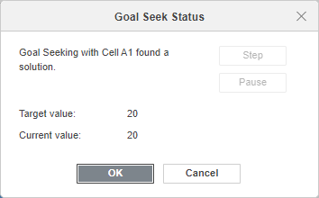

Traženje ciljne vrednosti
ONLYOFFICE Uređivač tabela nudi funkciju Traženje ciljne vrednosti koja vam omogućava da odredite koje brojeve treba zameniti u formuli kako biste dobili željeni i unapred poznat rezultat.
- Otvorite karticu Podaci i kliknite na ikonu Traženje ciljne vrednosti na gornjoj traci sa alatkama.
- U otvorenom prozoru Traženje ciljne vrednosti izaberite potrebne opcije:

- Postavi ćeliju - unesite referencu na ćeliju koja sadrži formulu. Možete koristiti ikonu da biste izabrali ćeliju.
- Na vrednost - unesite rezultat koji želite da dobijete u ćeliji koja sadrži formulu.
- Promenom ćelije - unesite referencu na ćeliju koja sadrži vrednost koju želite da promenite. Možete koristiti ikonu da biste izabrali ćeliju. Na ovu ćeliju mora da se odnosi formula koja se nalazi u ćeliji koju ste naveli u polju Postavi ćeliju.
- Kliknite na OK.
- Prozor Status traženja ciljne vrednosti će prikazati rezultat.

- Kliknite na OK da biste zamenili vrednosti u ćelijama navedenim u poljima Postavi ćeliju i Promenom ćelije.